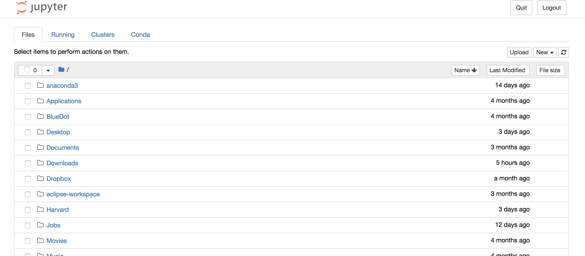

This tutorial will take you from never using python to training your first neural network!
To do before the tutorial: Install Anaconda
The first think you need to do is install Anaconda. You should choose the latest Python 3 version. Anaconda is a collection of things that make it easy to do data science. Here is what is included in the distribution:
- Python is an increasingly popular programming language for data science.
- The Anaconda Navigator, which lets you launch applications (called integrated development environments or IDEs) like Jupyter Notebook that help you write Python code.
- A bunch of useful packages (which are basically code that someone else wrote and has “packaged” nicely for you to use) that let you process data quickly and visualize results easily. Some of these packages are downloaded automatically and others you need to download individually yourself.
- The conda package management system that will organize and help you download all of the packages you need.
You can now create a new folder anywhere on your computer to store the files we’re going to work on.
Now you should try to open the Anaconda-Navigator application. From there, click on “Launch” underneath the Notebook rectangle. A new tab should open in internet browser that looks like this

Now navigate into the folder you just created and click on New in the top right hand corner and then click on Python 3. Congratulations! You just created your first Jupyter notebook. Feel free to play around with the notebook and get familiar with Python.
- Here is a python tutorial you can work through if you want.
- Here is a jupyter notebook tutorial, that covers what we’ve just done and quite a bit more.
A useful shortcut in Jupyter notebook is that shift + enter runs the current cell.
Installing everything you need is always the hardest part of any project so don’t get discouraged if you run into trouble. When in doubt, google! If that doesn’t work, email me at joshua_feldman[at]g[dot]harvard[dot]edu and I’ll try to help.
Great work! See you at the tutorial.
Who Cares About Deep Learning
With all the hype surrounding deep learning, what neural networks can actually do sometimes gets lost in the noise.
Before we get started, as some inspiration, here are some of the most technically interesting things I’ve seen neural networks do. We won’t be doing anything like this in the tutorial, but we will be covering the building blocks of these more advanced applications:
This was written by a neural network after being trained on Leo Tolstoy’s War and Peace. The crazy thing is that the algorithm was never told that words are seperated by spaces and learned, letter by letter, to write. (example from Andrej Karpathy Blog)
First, it’s fun to look at how the sampled text evolves while the model trains. For example, I trained an LSTM of Leo Tolstoy’s War and Peace and then generated samples every 100 iterations of training. At iteration 100 the model samples random jumbles:
tyntd-iafhatawiaoihrdemot lytdws e ,tfti, astai f ogoh eoase rrranbyne 'nhthnee e plia tklrgd t o idoe ns,smtt h ne etie h,hregtrs nigtike,aoaenns lng
However, notice that at least it is starting to get an idea about words separated by spaces. Except sometimes it inserts two spaces. It also doesn’t know that comma is almost always followed by a space. At 300 iterations we see that the model starts to get an idea about quotes and periods:
"Tmont thithey" fomesscerliund Keushey. Thom here sheulke, anmerenith ol sivh I lalterthend Bleipile shuwy fil on aseterlome coaniogennc Phe lism thond hon at. MeiDimorotion in ther thize."
The words are now also separated with spaces and the model starts to get the idea about periods at the end of a sentence. At iteration 500:
we counter. He stutn co des. His stanted out one ofler that concossions and was to gearang reay Jotrets and with fre colt otf paitt thin wall. Which das stimn
the model has now learned to spell the shortest and most common words such as “we”, “He”, “His”, “Which”, “and”, etc. At iteration 700 we’re starting to see more and more English-like text emerge:
Aftair fall unsuch that the hall for Prince Velzonski's that me of her hearly, and behs to so arwage fiving were to it beloge, pavu say falling misfort how, and Gogition is so overelical and ofter.
At iteration 1200 we’re now seeing use of quotations and question/exclamation marks. Longer words have now been learned as well:
"Kite vouch!" he repeated by her door. "But I would be done and quarts, feeling, then, son is people...."Until at last we start to get properly spelled words, quotations, names, and so on by about iteration 2000:
"Why do what that day," replied Natasha, and wishing to himself the fact the princess, Princess Mary was easier, fed in had oftened him. Pierre aking his soul came to the packs and drove up his father-in-law women.
The picture that emerges is that the model first discovers the general word-space structure and then rapidly starts to learn the words; First starting with the short words and then eventually the longer ones. Topics and themes that span multiple words (and in general longer-term dependencies) start to emerge only much later.
In addition to writing Tolstoy impressions, deep learning is making it easier to generate all sorts of media.
There are many applications of neural networks that are outside of the classification paradigm like software 2.0
Kris Sankaran has put together an excellent repository of humanitarian and socially minded applications of machine learning. Most do not involve deep learning, but some do.
But What is a Neural Network?
I would explain, but this video does it better than I ever could. 3Blue1Brown puts out the best videos on the internet. It’s a 4 part series, but we’re only going to cover the first one.
Install Tensorflow
Follow the instruction here. This will definitely be the hardest part.
If you can’t install tensorflow, I implemented this tutorial in a Google Colab Notebook, which has everything installed for you. It also lets you use fancy hardware like GPUs and TPUs. The tutorial is available here. More info on Colab Notebooks are available here.
Time to code!
We’re going to be working from this introduction to Keras. Keras is a package that let’s you build neural networks super easily.
You should create a new notebook, just like we did above. For the code below, just copy it into a seperate cell in the notebook and run it.
Our goal will be to classify the handwritten digits we saw in the video. This is actually a famous machine learning dataset called MNIST. We can download it directly from keras.
from keras.datasets import mnist
(x_train, y_train), (x_test, y_test) = mnist.load_data()
Using TensorFlow backend.
What we just downloaded are as follows:
x_train - 60000 images represented by 28x28 pixels. We will use this data to train our network.
y_train - 60000 labels represented as a single number between 0 and 9. We will use this data to train our network.
x_test - 10000 images represented by 28x28 pixels. We will use this data to evaluate our network.
y_test - 10000 labels represented as a single number between 0 and 9. We will use this data to evaluate our network.
The reason why we have seperate training and test data is because it would give us an unfair advantage if we only evaluated our neural network on examples we used for training. It would be like telling someone that 2 + 2 = 4 and then asking them to tell us what 2 + 2 equals. If they said 4, would that mean they understood addition or would they just be memorizing what we told them?
We can take a look at one of our images just as a sanity check.
import matplotlib.pyplot as plt # a plotting library
plt.imshow(x_train[0], cmap=plt.get_cmap('gray'))
print('this is labelled as a {}'.format(y_train[0]))
this is labelled as a 5
We need to preprocess our data a bit.
from keras.utils import np_utils
# get number of pixels
num_pixels = 28 * 28
# change training images from a 28x28 grid to a row or 784 numbers
x_train_reshape = x_train.reshape(60000, 784)
# do the same thing for the test images
x_test_reshape = x_test.reshape(10000, 784)
#scale the image from a 0-225 range to a 0-1 range
x_train_scaled = x_train_reshape/225
#do the same thing for the test images
x_test_scaled = x_test_reshape/225
# we need to change our labels to a "one hot" encoding
y_train_one_hot = np_utils.to_categorical(y_train)
#do the same thing for the test labels
y_test_one_hot = np_utils.to_categorical(y_test)
The first thing we’re going to do is create a model. A model is the basic object we’re going to work with.
from keras.models import Sequential
model = Sequential()
The Sequential command just creates an empty neural network. It doesn’t contain any layers.
We are now going to recreate the neural network from the 3blue1brown video. To do so, we add two dense layers. There are many different types of layers that can go in a neural network, but the simplest is the one we saw in the video where every neurom in the previous layer is connected to every neuron in the current layer. We go from 784 input neurons to 16 hidden neurons to 10 output neurons corresponding to the probability of the image being one of the 10 digits.
from keras.layers import Dense
model.add(Dense(units=16, activation='sigmoid', input_dim=784)) # add the first layer of the network
model.add(Dense(units=10, activation='softmax'))
We can see our full model with the summary command.
model.summary()
_________________________________________________________________
Layer (type) Output Shape Param #
=================================================================
dense_1 (Dense) (None, 16) 12560
_________________________________________________________________
dense_2 (Dense) (None, 10) 170
=================================================================
Total params: 12,730
Trainable params: 12,730
Non-trainable params: 0
_________________________________________________________________
We didn’t go into exactly what this next bit of code is doing, but basically it specifies how our neural network is going to learn. We can go into this more later if there is time. You can also watch more of the 3blue1brown videos and it will give you a better idea.
model.compile(loss='categorical_crossentropy',
optimizer='sgd',
metrics=['accuracy'])
We are now ready to train the model! We call the model.fit command and pass the following parameters.
x_train - our training images
y_train - our labels
epochs - how many times our neural network is going to see our full dataset
batch_size - instead of training our network on all our data at once, we’re going to only show it smaller “batches” of 32 images at time.
model.fit(x_train_scaled, y_train_one_hot, epochs=20, batch_size=32)
Epoch 1/20
60000/60000 [==============================] - 3s 45us/step - loss: 1.7241 - acc: 0.6087: 1s - loss:
Epoch 2/20
60000/60000 [==============================] - 2s 31us/step - loss: 1.0161 - acc: 0.8034
Epoch 3/20
60000/60000 [==============================] - 2s 29us/step - loss: 0.7378 - acc: 0.8486
Epoch 4/20
60000/60000 [==============================] - 2s 30us/step - loss: 0.5993 - acc: 0.8702: 1s -
Epoch 5/20
60000/60000 [==============================] - 2s 30us/step - loss: 0.5179 - acc: 0.8815
Epoch 6/20
60000/60000 [==============================] - 2s 30us/step - loss: 0.4657 - acc: 0.8880
Epoch 7/20
60000/60000 [==============================] - 2s 30us/step - loss: 0.4298 - acc: 0.8935
Epoch 8/20
60000/60000 [==============================] - 2s 32us/step - loss: 0.4035 - acc: 0.8975
Epoch 9/20
60000/60000 [==============================] - 2s 32us/step - loss: 0.3832 - acc: 0.9008
Epoch 10/20
60000/60000 [==============================] - 2s 30us/step - loss: 0.3670 - acc: 0.9032
Epoch 11/20
60000/60000 [==============================] - 2s 29us/step - loss: 0.3538 - acc: 0.9059
Epoch 12/20
60000/60000 [==============================] - 2s 32us/step - loss: 0.3426 - acc: 0.9079
Epoch 13/20
60000/60000 [==============================] - 2s 29us/step - loss: 0.3330 - acc: 0.9098
Epoch 14/20
60000/60000 [==============================] - 2s 28us/step - loss: 0.3247 - acc: 0.9113
Epoch 15/20
60000/60000 [==============================] - 2s 29us/step - loss: 0.3173 - acc: 0.9128
Epoch 16/20
60000/60000 [==============================] - 2s 30us/step - loss: 0.3106 - acc: 0.9143: 1s
Epoch 17/20
60000/60000 [==============================] - 2s 34us/step - loss: 0.3047 - acc: 0.9154: 1s - loss:
Epoch 18/20
60000/60000 [==============================] - 2s 33us/step - loss: 0.2993 - acc: 0.9170
Epoch 19/20
60000/60000 [==============================] - 2s 31us/step - loss: 0.2945 - acc: 0.9177
Epoch 20/20
60000/60000 [==============================] - 2s 30us/step - loss: 0.2900 - acc: 0.9191
<keras.callbacks.History at 0x146e52fd0>
To evaluate the model, we call model.evaluate on our test data. The second number in the output is our accuracy.
model.evaluate(x_test_scaled, y_test_one_hot)
10000/10000 [==============================] - 0s 17us/step
[0.28416043276786807, 0.9213]
As a sanity check, we can make predictions on our test data and match them up with our labels. We need to convert the probabilities returned by our neural network back to labels.
classes = model.predict(x_test_scaled, batch_size=128)
import numpy as np
predictions = np.argmax(classes, axis = 1)
labels = np.argmax(y_test_one_hot, axis = 1)
sum(predictions == labels)/len(labels)
0.9213
We got 92% accuracy! More importantly, you just trained your first neural network!